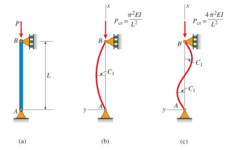

Materyel Mekaniği - 6
Dönüş (Rotation)
Alttaki gibi bir kiriş düşünelim,

Daha önce bu tür bir kiriş üzerinde eksenel yöndeki kuvvetler ve yer değişimlerinin ilişkisini
$$ \left[\begin{array}{c} f'_{1x} \\ f'_{2x} \end{array}\right] = \frac{AE}{L} \left[\begin{array}{cc} 1 & -1 \\ -1 & 1 \end{array}\right] \left[\begin{array}{c} u'_1 \\ u'_2 \end{array}\right] \qquad (1) $$
olarak göstermiştik. Üstteki formül kirişin yerel, kendisine has kordinat sistemini baz alıyor. Eğer üstteki değişkenleri global kordinat sistemine eşlemek, yansıtmak istiyorsak o zaman sistemi resimdeki $\theta$ kadar döndürmemiz gerekiyor. Döndürme işlemi genel olarak iki boyuttaki bir $[u, v]$ vektörü için [1, sf. 85]
$$ \left[\begin{array}{c} u' \\ v' \end{array}\right] = \left[\begin{array}{cc} C & S \\ -S & C \end{array}\right] \left[\begin{array}{c} u \\ v \end{array}\right] \qquad (2) $$
ile yapılır, ki $C = \cos\theta$, $S = \sin\theta$.
Fakat unutmayalım tek eksenlikten çıktığımız zaman kirişin her ucunda iki serbestlik derecesi vardır, her uç $u,v$ yönünde yer değişim yaşayabilir, bunları $u_1,v_1$ ve $u_2,v_2$ diye gösterebiliriz. O zaman dönüş hesabı
$$ \left[\begin{array}{c} u'_1 \\ v'_1 \\ u'_2 \\ v'_2 \end{array}\right] = \left[\begin{array}{cccc} C & S & 0 & 0 \\ -S & C & 0 & 0 \\ 0 & 0 & C & S \\ 0 & 0 & -S & C \end{array}\right] \left[\begin{array}{c} u_1 \\ v_1 \\ u_2 \\ v_2 \end{array}\right] $$
İlerlemeden önce iki üstteki dönüş matrisi, $T$ diyelim, hakkında ilginç bir ispatı verelim, ileride lazım olacak. Acaba $T^T = T^{-1}$ ifadesi doğru mudur? Bu aynı zamanda [1] kitabındaki 3.28 probleminin de cevabı. İspat için $T T^T$ çarpımını yapabiliriz, eğer birim (identity) matrisi elde edersek ispat tamam demektir.
$$ T = \left[\begin{array}{cccc} C & S & 0 & 0 \\ -S & C & 0 & 0 \\ 0 & 0 & C & S \\ 0 & 0 & -S & C \end{array}\right], \quad T^T = \left[\begin{array}{cccc} C & -S & 0 & 0 \\ S & C & 0 & 0 \\ 0 & 0 & C & -S \\ 0 & 0 & S & C \end{array}\right] $$
Çarpımı sympy ile yapalım,
from sympy import symbols, pprint, latex
from sympy.matrices import Matrix
C,S = symbols("C,S")
T = Matrix([[C,S,0,0],[-S,C,0,0],[0,0,C,S],[0,0,-S,C]])
Tprime = Matrix([[C,-S,0,0],[S,C,0,0],[0,0,C,-S],[0,0,S,C]])
print (latex(T * Tprime)[:60],'...')
\left[\begin{matrix}C^{2} + S^{2} & 0 & 0 & 0\\\\0 & C^{2} + S ...
\LaTeX\ ile
$$ \left[\begin{matrix}C^{2} + S^{2} & 0 & 0 & 0\\0 & C^{2} + S^{2} & 0 & 0\\0 & 0 & C^{2} + S^{2} & 0\\0 & 0 & 0 & C^{2} + S^{2}\end{matrix}\right] $$
Hatırlarsak $C = \cos\theta, S = \sin\theta$, bunları yerine koyunca tüm köşegen boyunca 1 değeri elde edilir, diğer hücrelerde sıfır var, demek ki bir birim matrisi elde ettik. Bu demektir ki $T T^T = I$, ve bu ifadenin doğru olmasının tek yolu $T^T = T^{-1}$ olmasıdır. İspat tamamlandı.
Bir önemli eşitlik daha, yer değişimlerde olduğu gibi, kuvvetler de döndürme matematiğine tabi olabilirler. Mesela dönüş matrisi $T$ için
$$ d' = T d $$
diyebilirdim, ya da kuvvetler için
$$ f' = T f $$
Bunun bir yan etkisi şudur, yer değişimlerini kuvvetlerle ilintilendiren sistem
$$ f = k d $$
ise,
$$ f' = k' d' $$
Bu sistem şöyle de gösterilebilir,
$$ T f = k' T d $$
Eğer üstteki ifadeyi soldan $T^{-1}$ ile çarparsak,
$$ T^{-1} T f = T^{-1} k' T d $$
$T^{-1} T = I$ olduğu için yokolur, ayrıca biraz önceki ispattan $T^{-1} = T^T$ olduğunu biliyoruz,
$$ f = T^T k' T d $$
Global direngenlik matrisi $k$ ortadaki $T^T k' T$ büyüklüğüdür.
Devam edelim. Dönüş mekaniğini gördük, şimdi önceki derste işlenen kiriş parçasına hem eksenel dinamiği hem de biraz önce gördüğümüz dönüş mantığını ekleyelim. Altta görülen kiriş parçasının hareketlerini hesaplayabilmek istiyoruz yani,

Önceki dersten hatırlarsak eksene dik yük alan parçaların mekaniği alttaki formülle gösterilmişti,
$$ \left[\begin{array}{c} f_{1y} \\ m_1 \\ f_{2y} \\ m_2 \end{array}\right] = \frac{EI}{L^3} \left[\begin{array}{cccc} 12 & 6L & -12 & 6L \\ 6L & 4L^2 & -6L & -6L \\ -12 & -6L & 12 & -6L \\ 6L & 2L^2 & -6L & 4L^2 \end{array}\right] \left[\begin{array}{ccc} v_1 \\ \phi_1 \\ v_2 \\ \phi_2 \end{array}\right] $$
Bu formüle (1)'deki eksenel mantığı eklersek, yerel kordinatlarda
$$ \left[\begin{array}{c} f'_{1x} \\ f'_{1y} \\ m'_1 \\ f'_{2x} \\ f'_{2y} \\ m'_2 \end{array}\right] = \left[\begin{array}{cccccc} C_1 & 0 & 0 & -C_1 & 0 & 0 \\ 0 & 12C_2 & 6 C_2 L & 0 & -12 C_2 & 6 C_2 L \\ 0 & 6C_2 L & 4 C_2 L^2 & 0 & -6 C_2 L & 2 C_2 L^2 \\ -C_1 & 0 & 0 & C_1 & 0 & 0 \\ 0 & -12C_2 & -6 C_2 L & 0 & 12 C_2 & -6 C_2 L \\ 0 & 6 C_2 L & 2 C_2 L^2 & 0 & -6C_2 L & 4C_2 L^2 \end{array}\right] \left[\begin{array}{c} u'_1 \\ v'_1 \\ \phi'_1 \\ u'_2 \\ v'_2 \\ \phi'_2 \end{array}\right] $$
elde edilir, ki $C_1 = \dfrac{AE}{L}$ ve $C_2 = \dfrac{EI}{L^3}$ olmak üzere. Üstte ortada duran matris $k'$ matrisidir.
Şimdi dönüş mekaniğini ekleyelim.
$$ \left[\begin{array}{ccc} u'_1 \\ v'_1 \\ \phi'_1 \\ u'_2 \\ v'_2 \\ \phi'_2 \end{array}\right] = \left[\begin{array}{cccccc} C & S & 0 & 0 & 0 & 0 \\ -S & C & 0 & 0 & 0 & 0 \\ 0 & 0 & 1 & 0 & 0 & 0 \\ 0 & 0 & 0 & C & S & 0 \\ 0 & 0 & 0 & -S & C & 0 \\ 0 & 0 & 0 & 0 & 0 & 1 \end{array}\right] \left[\begin{array}{ccc} u_1 \\ v_1 \\ \phi_1 \\ u_2 \\ v_2 \\ \phi_2 \end{array}\right] $$
Dikkat edersek dönüş sağlayan 2 x 2 boyutundaki altmatristir, üstteki matriste görülen o iki bölge, daha büyük matriste öyle yerleştirildi ki sadece $u_1,v_1$ ve $u_2,v_2$ değişkenlerini etkiliyor, onlara tekabül eden bölgelerde duruyor.
Böylece $T$ matrisini bulmuş olduk. Şimdi $k$ matrisini hesaplamak için $k = T^T k' T$ işlemini yapabiliriz [1, sf. 243].
from sympy import symbols, latex, simplify
from sympy.matrices import Matrix
import pickle
C,S,C1,C2,L,A,E,I = symbols("C,S,C1,C2,L,A,E,I")
kprime = Matrix([ [C1, 0, 0, -C1, 0, 0],
[0, 12*C2, 6*C2*L, 0, -12*C2, 6*C2*L],
[0, 6*C2*L, 4*C2*L**2, 0, -6*C2*L, 2*C2*L**2],
[-C1, 0, 0, C1, 0, 0],
[0, -12*C2, -6*C2*L, 0, 12*C2, -6*C2*L],
[0, 6*C2*L, 2*C2*L**2, 0, -6*C2*L, 4*C2*L**2]])
T = Matrix([[C,S,0,0,0,0],[-S,C,0,0,0,0],[0,0,1,0,0,0],
[0,0,0,C,S,0],[0,0,0,-S,C,0],[0,0,0,0,0,1]])
res = T.transpose()*kprime*T
res = res.subs(C1,A*E/L)
res = res.subs(C2,E*I/L**3)
pickle.dump(res,open("frame.pkl","wb")) # sonra lazim olacak diske kaydet
res = res / (E/L)
print (latex(simplify(res))[:70],'...')
\left[\begin{matrix}A C^{2} + \frac{12 I S^{2}}{L^{2}} & \frac{C S \le ...
$$ k = \frac{E}{L} \times \left[\begin{matrix}A C^{2} + \frac{12 I S^{2}}{L^{2}} & \frac{C S \left(A L^{2} - 12 I\right)}{L^{2}} & - \frac{6 I S}{L} & - A C^{2} - \frac{12 I S^{2}}{L^{2}} & \frac{C S \left(- A L^{2} + 12 I\right)}{L^{2}} & - \frac{6 I S}{L}\\\frac{C S \left(A L^{2} - 12 I\right)}{L^{2}} & A S^{2} + \frac{12 C^{2} I}{L^{2}} & \frac{6 C I}{L} & \frac{C S \left(- A L^{2} + 12 I\right)}{L^{2}} & - A S^{2} - \frac{12 C^{2} I}{L^{2}} & \frac{6 C I}{L}\\- \frac{6 I S}{L} & \frac{6 C I}{L} & 4 I & \frac{6 I S}{L} & - \frac{6 C I}{L} & 2 I\\- A C^{2} - \frac{12 I S^{2}}{L^{2}} & \frac{C S \left(- A L^{2} + 12 I\right)}{L^{2}} & \frac{6 I S}{L} & A C^{2} + \frac{12 I S^{2}}{L^{2}} & \frac{C S \left(A L^{2} - 12 I\right)}{L^{2}} & \frac{6 I S}{L}\\\frac{C S \left(- A L^{2} + 12 I\right)}{L^{2}} & - A S^{2} - \frac{12 C^{2} I}{L^{2}} & - \frac{6 C I}{L} & \frac{C S \left(A L^{2} - 12 I\right)}{L^{2}} & A S^{2} + \frac{12 C^{2} I}{L^{2}} & - \frac{6 C I}{L}\\- \frac{6 I S}{L} & \frac{6 C I}{L} & 2 I & \frac{6 I S}{L} & - \frac{6 C I}{L} & 4 I\end{matrix}\right] \qquad (3) $$
Bu sonuç [1]'deki sonuca benziyor, cebirsel olarak eşit.
$E/L$ bölümünü sympy basitleştirmesi öncesi sistemde dışarıdan uyguladık
çünkü cebirsel düzenlemede sisteme yardım etmek istedik, bu sayede sonuç
kitaptaki çıktıya benzemiş oldu. Ayrıca cebirsel işlem sonucunu diske kaydettik
(3) çıktısı alttaki problemde lazım olacak.
Birden fazla kiriş formülü de üstdüşüm ile birleştirilerek daha büyük bir yapının formülü haline getirilebilir, alttaki soruda bunun nasıl yapılacağını göreceğiz. Elde edilecek sistem / matris düz katı şasi / düz oynamaz çerçeve (rigid plane frame) formülasyonu için kullanılacak, bu sistem "katı bir şekilde birbirine bağlanmış bir grup kiriş parçalarının toplamı" olarak ta tarif edilebilir, yani kiriş parçalarının birbirine olan açıları, yük uygulandıktan sonra bağlandıklarında ne ise o halde kalırlar, deformasyon sonrası değişime uğramazlar. Ayrıca bu tür bir sistemde moment bir parçadan diğerine, bağlantı noktaları üzerinden transfer olabilir, yani katı bağlantı noktaları üzerinden bir moment sürekliliği vardır.
Soru
İlk katı düzlem çerçeve analizi olarak alttaki basit sistemi çözün.

Cevap
Sistem düğüm 1 ve 4 üzerinden sabitlenmiş, düğüm 2 üzerinde ve yatay 40 kN kuvvet uygulanıyor, ayrıca düğüm 3'te pozitif moment 500 N-m var. Üstteki resimde global kordinat sisteminin yeri gösteriliyor [1, sf. 244].
Çözüm için her parçayı kiriş matematiği (3) ile formülize edeceğiz, ve bu parçaları üstdüşüm ile biraraya koyacağız, nihai matrisi çözerek yükleri ve yer değişimleri bulacağız.
Parça 1
Hesap yapabilmek için (3)'teki matrise ihtiyaç var, bu matrisin sembolik halini diskten okuyalım, oraya kaydetmiştik,
from sympy import symbols, latex, simplify
from sympy.matrices import Matrix
import pickle, pandas as pd
pd.set_option('display.max_columns', None)
pd.set_option("display.precision", 4)
C,S,L,A,E,I = symbols("C,S,L,A,E,I")
frame = pickle.load(open('frame.pkl','rb'))
Birinci parçanın duruş açısı 90 derece, o zaman $C = \cos 90 = 0$, $S = \sin 90
= 1$. Bu değerleri sembolik matrisi sayısal hale çevirmek için kullanacağız,
"yoğun (dense) matris" elde edeceğiz, subs çağrısı ile,
d = {L:3000.0, C:0.0, S:1.0, E:200.0*1e3, A:6500.0, I:80.0*1e6}
res = frame.subs(d) / (1e3*d[E]/d[L])
df1 = pd.DataFrame(np.array(res).astype(np.float64))
df1.columns = ['u1','v1','phi1','u2','v2','phi2']
df1 = df1.round(2)
print ('66.67*1000 * \n', df1)
66.67*1000 *
u1 v1 phi1 u2 v2 phi2
0 0.11 0.0 -160.0 -0.11 0.0 -160.0
1 0.00 6.5 0.0 0.00 -6.5 0.0
2 -160.00 0.0 320000.0 160.00 0.0 160000.0
3 -0.11 0.0 160.0 0.11 0.0 160.0
4 0.00 -6.5 0.0 0.00 6.5 0.0
5 -160.00 0.0 160000.0 160.00 0.0 320000.0
Matrisin birimi N/mm.
Parça 2
Bu parçanın duruşu sebebiyle açı sıfır, yani $C=1,S=0$.
d = {L:3000.0, C:1.0, S:0.0, E:200.0*1e3, A:6500.0, I:40.0*1e6}
res = frame.subs(d) / (1e3*d[E]/d[L])
df2 = pd.DataFrame(np.array(res).astype(np.float64))
df2.columns = ['u2','v2','phi2','u3','v3','phi3']
print ('66.67*1000 * \n', df2)
66.67*1000 *
u2 v2 phi2 u3 v3 phi3
0 6.5 0.0000 0.0 -6.5 0.0000 0.0
1 0.0 0.0533 80.0 0.0 -0.0533 80.0
2 0.0 80.0000 160000.0 0.0 -80.0000 80000.0
3 -6.5 0.0000 0.0 6.5 0.0000 0.0
4 0.0 -0.0533 -80.0 0.0 0.0533 -80.0
5 0.0 80.0000 80000.0 0.0 -80.0000 160000.0
Parça 3
Açı 270 derece, demek ki $C=0,S=-1$.
d = {L:3000.0, C:0.0, S:-1, E:200.0*1e3, A:6500.0, I:80.0*1e6}
res = frame.subs(d) / (1e3*d[E]/d[L])
df3 = pd.DataFrame(np.array(res).astype(np.float64))
df3.columns = ['u3','v3','phi3','u4','v4','phi4']
print ('66.67*1000 * \n', df3)
66.67*1000 *
u3 v3 phi3 u4 v4 phi4
0 0.1067 0.0 160.0 -0.1067 0.0 160.0
1 0.0000 6.5 0.0 0.0000 -6.5 0.0
2 160.0000 0.0 320000.0 -160.0000 0.0 160000.0
3 -0.1067 0.0 -160.0 0.1067 0.0 -160.0
4 0.0000 -6.5 0.0 0.0000 6.5 0.0
5 160.0000 0.0 160000.0 -160.0000 0.0 320000.0
Üstteki üç matris birleştirilip, üstdüşüm üzerinden daha büyük bir matris haline getirilecek. Üstdüşüm yapılabilmesi için her matrisin aynı boyutta, aynı kolonlara sahip olması gerekir. Bir matrisi (ya da Dataframe) alıp yeni değişkenlere "büyüten" bir kod parçası lazım.
import pandas as pd
pd.set_option('display.max_columns', None)
def expand_dataframe(df, new_cols):
res = df.copy()
old_cols = list(df.columns)
addn_vars = [x for x in new_cols if x not in old_cols]
res.index = df.columns
for x in addn_vars:
res[x] = np.nan
res.loc[x] = pd.Series(res.columns)
res = res[new_cols]
res = res.reindex(new_cols).fillna(0)
return res
df = pd.DataFrame([['a','c'],['b','d']],columns = ['u1','u3'])
print (df)
res = expand_dataframe(df,['u1','u2','u3','u4'])
print (res)
u1 u3
0 a c
1 b d
u1 u2 u3 u4
u1 a 0.0 c 0.0
u2 0 0.0 0 0.0
u3 b 0.0 d 0.0
u4 0 0.0 0 0.0
Üstteki kod parçası bunu yapabiliyor, örnek verideki ilk u1, u3
kolon listesini u1, u2, u3, u4 listesine büyüttük,
ve kod gerekli yerlere gerekli sıfır değerlerini yazdı ve eski matrisin
değerlerini büyütülmüş yeni matriste uygun yerlere taşıdı.
Nihai matristen değişken çıkartmak ta lazım olabiliyor, sınır şartları bunu
gerektiriyor olabilir. mesela u1=0 için bu değişkene tekabül eden hem
kolon hem satır çıkartılmalı,
res2 = res.copy()
res2 = res2.drop('u1',axis=1)
res2 = res2.drop('u1',axis=0)
print (res2)
u2 u3 u4
u2 0.0 0 0.0
u3 0.0 d 0.0
u4 0.0 0 0.0
Verilen bir kolon ve satırların listesini çıkartmak için de bir fonksiyon yazalım,
def drop_col_row(df, var_list):
res = df.copy()
for x in var_list:
res = res.drop(x,axis=1)
res = res.drop(x,axis=0)
return res
Son hesap aşamasına geldik. Üstdüşüm yapalım, ve $u_1 = v_1 = \phi_1 = 0$, $u_4 = v_4 = \phi_4 = 0$ şartlarını uygulayalım,
all_vars = ['u1','v1','phi1','u2','v2','phi2','u3','v3','phi3','u4','v4','phi4']
df1f = expand_dataframe(df1,all_vars)
df2f = expand_dataframe(df2,all_vars)
df3f = expand_dataframe(df3,all_vars)
df_super = df1f + df2f + df3f
df_super = drop_col_row(df_super, ['u1','v1','phi1','u4','v4','phi4'])
print (df_super)
u2 v2 phi2 u3 v3 phi3
u2 6.61 0.0000 160.0 -6.5000 0.0000 0.0
v2 0.00 6.5533 80.0 0.0000 -0.0533 80.0
phi2 160.00 80.0000 480000.0 0.0000 -80.0000 80000.0
u3 -6.50 0.0000 0.0 6.6067 0.0000 160.0
v3 0.00 -0.0533 -80.0 0.0000 6.5533 -80.0
phi3 0.00 80.0000 80000.0 160.0000 -80.0000 480000.0
Bu matrisi bir $Ax = b$ lineer sistemini çözmek için kullanacağız. Üstteki matris $A$ olacak, $b$ ise kuvvet ve momentleri taşıyan bir vektör, sınır şartlarının çıkarttığı değerleri sonrası kalan değişkenler,
$$ \left[\begin{array}{c} f_{2x} \\ f_{2y} \\ m_{2} \\ f_{3x} \\ f_{3y} \\ m_{3} \end{array}\right] = \left[\begin{array}{c} 4 \times 10^4 \\ 0 \\ 0 \\ 0 \\ 0 \\ 5 \times 10^5 \end{array}\right] $$
Çözeceğimiz sistem
$$ \left[\begin{array}{c} 4 \times 10^4 \\ 0 \\ 0 \\ 0 \\ 0 \\ 5 \times 10^5 \end{array}\right] = 66.67 \times 10^3 \left[\begin{array}{cccccc} 6.61 & 0 & 160 & -6.5 & 0 & 0 \\ 0 & 6.5533 & 80.0 & 0 & -0.0533 & 80.0 \\ 160 & 80 & 480000 & 0 & -80 & 80000 \\ -6.50 & 0 & 0 & 6.6067 & 0 & 160.0 \\ 0 & -0.0533 & -80.0 & 0 & 6.5533 & -80.0 \\ 0 & 80 &. 80000 & 160 & -80 & 480000 \end{array}\right] \left[\begin{array}{c} u_2 \\ v_2 \\ \phi_2 \\ u_3 \\ v_3 \\ \phi_3 \end{array}\right] $$
import numpy.linalg as lin
b = np.array([4*1e4,0,0,0,0,5*1e5])
x = lin.solve(66.67*1e3*df_super, b)
pd.DataFrame(x,index=df_super.columns)
Out[1]:
0
u2 4.8197
v2 0.0333
phi2 -0.0014
u3 4.7747
v3 -0.0333
phi3 -0.0014
Birimler yer değişimleri için mm, açılar için radyan. Sonuçlara göre düğüm 2 ve 3 noktalarında şaşı bir miktar sağa doğru gidiyor, ve dikey yer değişim ve dönüş yok denecek kadar az.
[devam edecek]
Kaynaklar
[1] Logan, A First Course in the Finite Element Method, 6th Ed
Yukarı